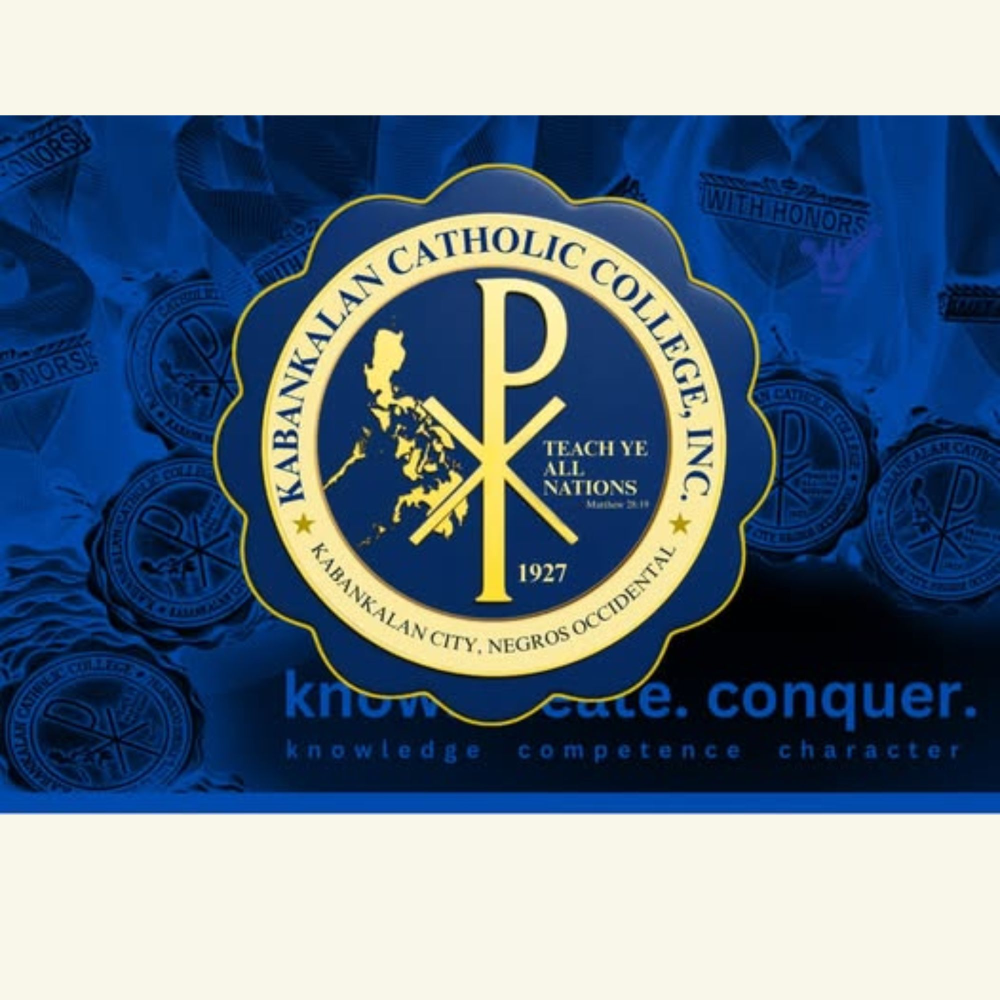
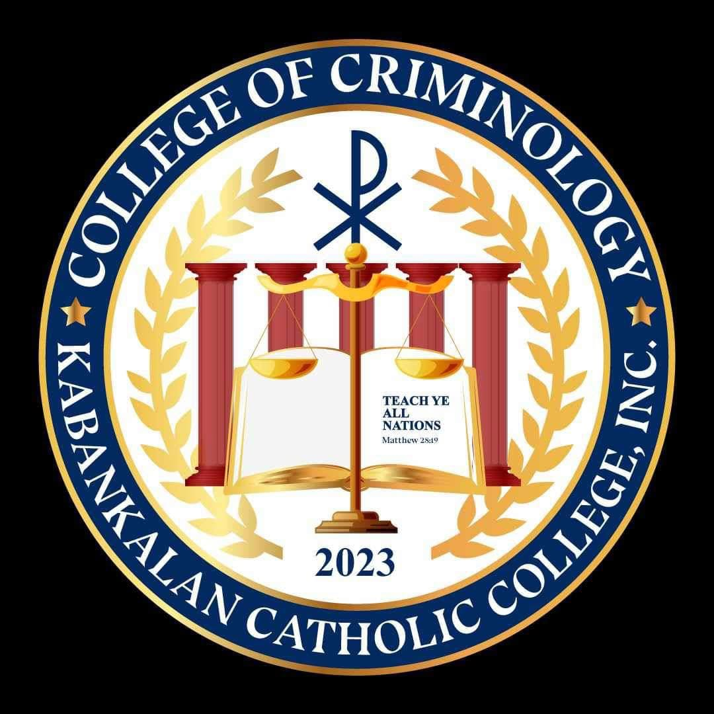

Knowledge
Learning and discovery.
Discover a community where knowledge, values, and personal growth come together to shape meaningful futures.


Welcome to Kabankalan Catholic College, Inc. (KCC), a Catholic college in Kabankalan.
Education is about more than what happens inside a classroom. KCC's Catholic identity offers a foundation for learning, personal growth, and values formation.
EXPLORE OUR VALUESLearning and discovery.
Growth guided by values.
Growing together.
A meaningful college experience is built through learning, personal development, strong values, and a sense of community.
Develop knowledge, discover new ideas, and build a foundation for lifelong learning.
Develop responsibility, reflect on meaningful values, and grow through every experience.
Explore your interests, strengthen your abilities, and discover new possibilities.
Experience a learning environment shaped by connection, collaboration, and shared purpose.
Explore academic communities and discover the learning opportunities and activities featured at KCC.
Discover KCC's College of Management, Accountancy, and Technology, featured in its CMAT Pinning 2025 event.
KCC has featured its Criminology students during Reception Rites, recognizing their commitment and preparation for public service.
Looking for a specific course? Contact KCC to learn about its current academic offerings and admission requirements.
For the complete and current academic program list, please contact Kabankalan Catholic College directly.
Discover the experiences, creativity, and opportunities that make every learning journey meaningful.
 01 / LEARNING
01 / LEARNING
Build knowledge, explore new ideas, and discover opportunities through meaningful learning experiences.
 02 / CREATIVITY
02 / CREATIVITY
 03 / INNOVATION
03 / INNOVATION
Note: Gallery images are illustrative template photographs.
Discover activities, achievements, and stories from the Kabankalan Catholic College community.
The KCC Herald celebrated its campus journalists following their participation in the Division Schools Press Conference 2026, held on October 31.
View KCC Herald update
A learning session introduced students to maritime awareness, environmental protection, career opportunities, and water safety.
View Criminology update
Held at the KCC Gymnasium, the symposium featured sessions on peace-building, conflict resolution, youth leadership, and responsible decision-making.
View Peace Symposium updateStories, activities, and announcements that bring the KCC community together.
Explore the college and find out where your learning journey could lead.
Interested in learning more about Kabankalan Catholic College? Explore its academic highlights, campus activities, and learning community.
EXPLORE ACADEMIC PATHWAYS